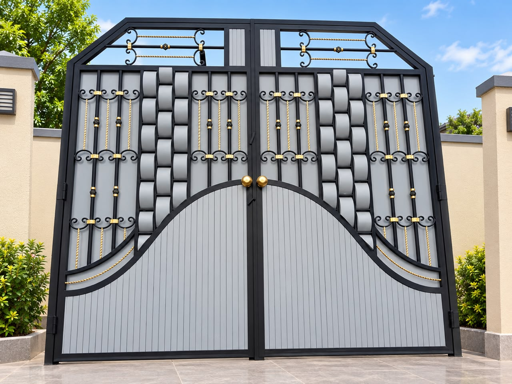
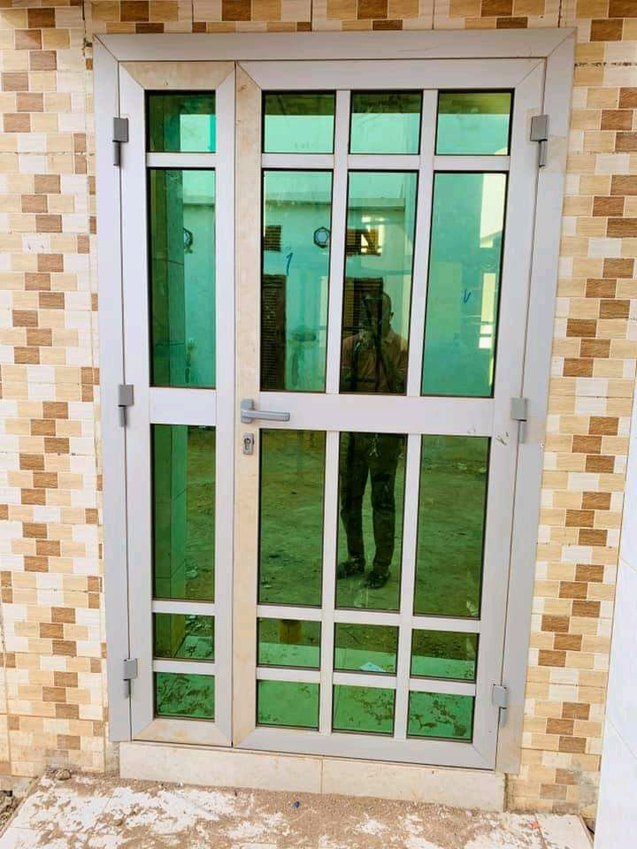
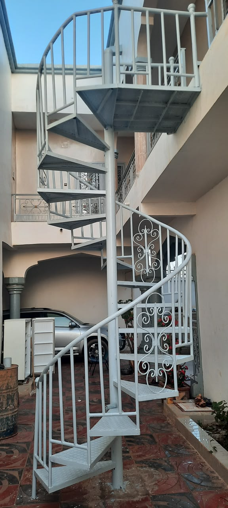
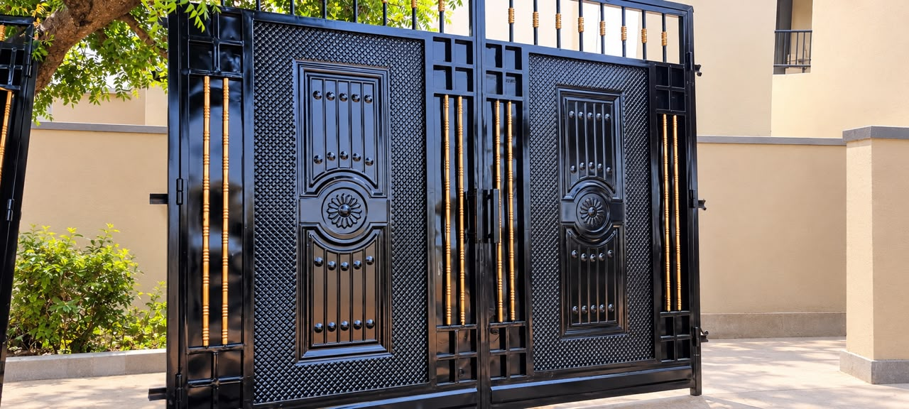
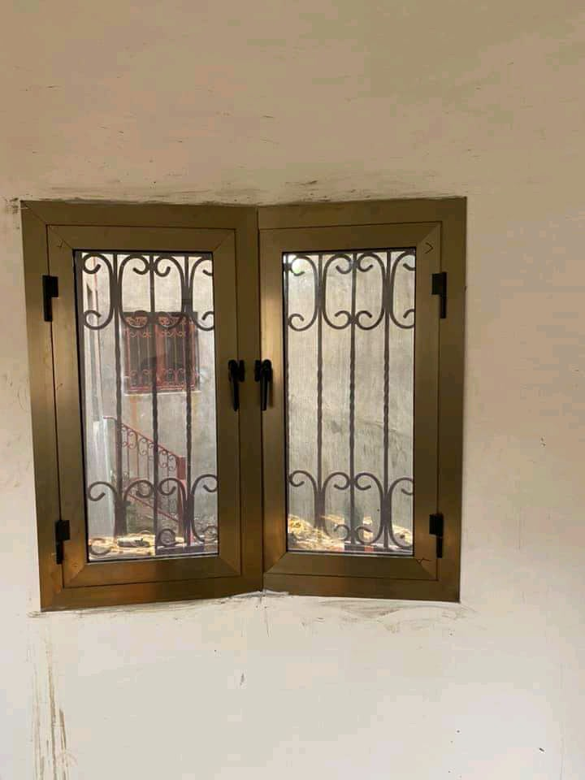
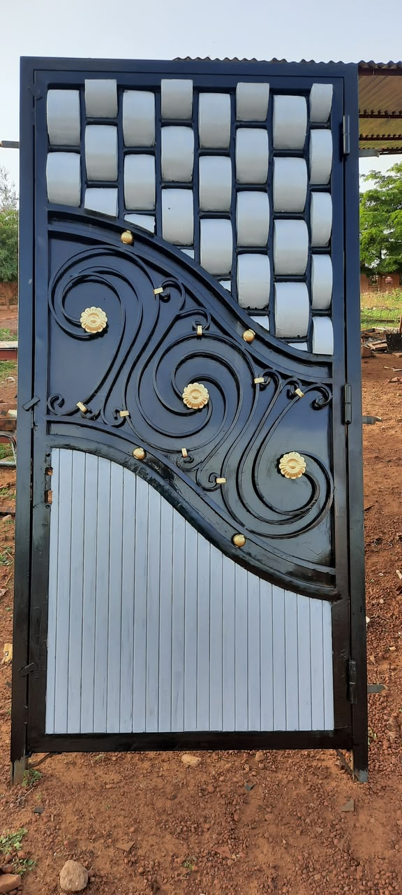
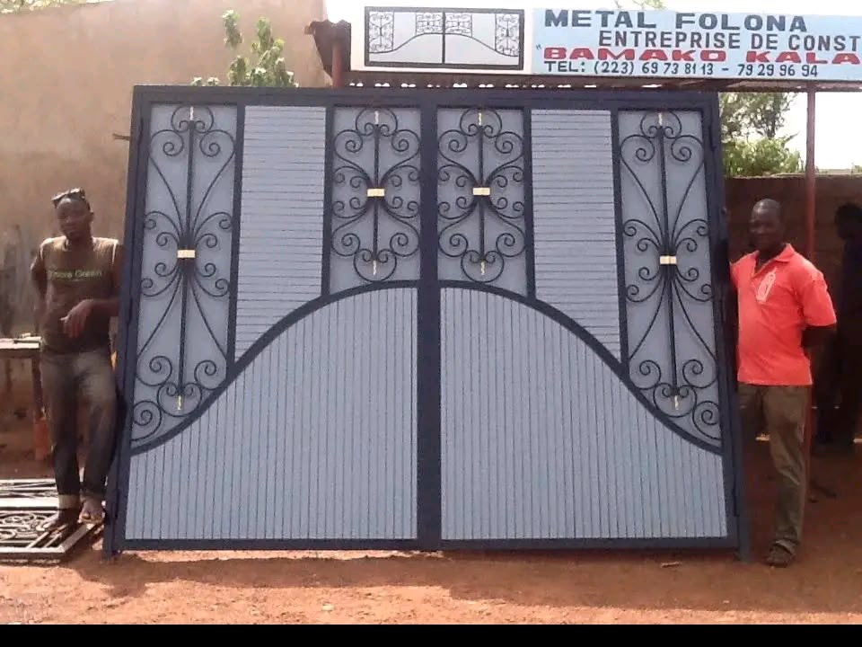
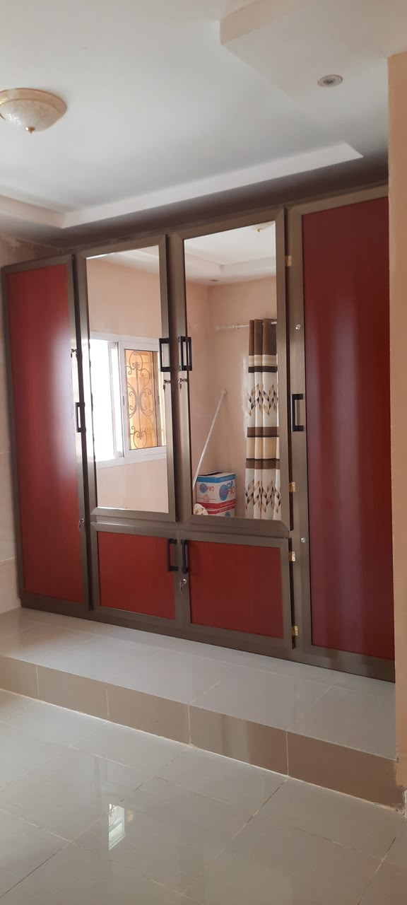
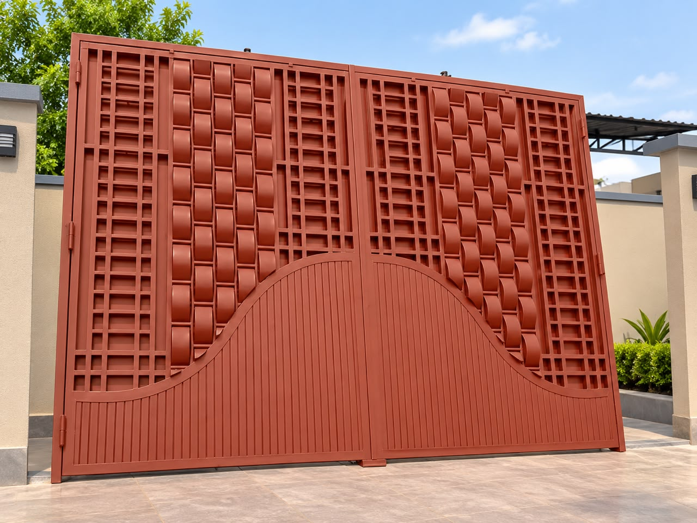
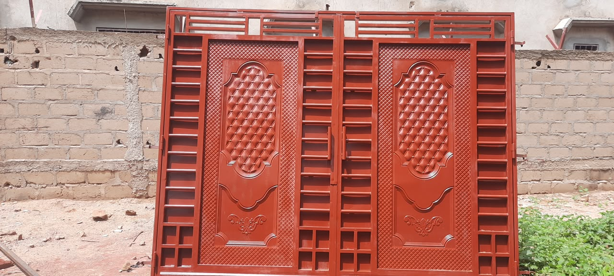

Tafoutien Métallique & Vitrages L'Art du Métal & du Verre Façonné sur Mesure
TMV-SARL conçoit, fabrique et installe vos portails monumentaux découpés au laser, portes blindées de haute sécurité, garde-corps design inox & verre, escaliers contemporains et baies vitrées lumineuses pour villas, résidences et chantiers de prestige à Bamako.




Une exigence technique au service de votre habitat
Implantée au cœur de Kalaban Koro, TMV-SARL est une référence malienne en ferronnerie d'art, charpente métallique et vitrerie architecturale. Sous la conduite d'Abdramane Dembélé, nos maîtres artisans réalisent des ouvrages associant haute sécurité, longévité face au climat sahélien et finitions contemporaines haut de gamme pour les villas et entreprises de Bamako.
Des solutions complètes en métallerie et vitrage
De l'étude de votre plan à l'assemblage en atelier et à la pose sur votre chantier à Bamako.

Prestige & LaserPortes & Portails Laser
Portails coulissants motorisables, battants ajourés et clôtures contemporaines en tôle épaisse traitée anticorrosion.
En savoir plus Inox 316 & Verre
Inox 316 & Verre
Garde-corps & Balustrades
Rampes et balustrades de terrasses et balcons en inox marin 316 poli et panneaux de verre trempé Sécurit.
En savoir plus
Luminosité & SécuritéBaies Vitrées Coulissantes
Systèmes coulissants grand format en aluminium anodisé ou laqué pour villas, salons et terrasses lumineuses.
En savoir plusEscaliers Métalliques
Escaliers droits, quart-tournants ou hélicoïdaux (colimaçon) avec limon central robuste et marches sur-mesure.
En savoir plus
Haute SécuritéPortes Blindées & Entrées
Portes de villa et de bureaux haute sécurité multipoints, structure acier renforcé et finitions soignées.
En savoir plus
Atelier & PoseCharpentes & Auvents
Calcul, débitage et montage d'ossatures métalliques, pergolas abris voitures et hangars industriels.
En savoir plus
Menuiserie AluVitrines & Cloisons Vitrées
Devantures de boutiques, cloisons amovibles de bureaux et vitrages anti-effraction pour commerces et banques.
En savoir plusVitrage & Miroiterie
Fourniture et découpe de verres trempés, feuilletés, miroirs biseautés et verrières style atelier d'artiste.
En savoir plusComment se déroule votre projet chez TMV ?
Un processus éprouvé et transparent pour garantir le respect de vos cotes, de vos délais et de votre budget à Bamako.
Prise de cotes & Écoute
Notre technicien se déplace sur votre chantier à Bamako pour relever les dimensions exactes et vous conseiller techniquement.
Devis clair sous 24h/48h
Proposition chiffrée détaillée indiquant les matériaux, les profilés retenus et les délais fermes de fabrication.
Fabrication en atelier
Découpe de précision, soudure soignée et traitement anticorrosion réalisés dans notre atelier de Kalaban Koro.
Livraison & Pose soignée
Acheminement, ancrage sécurisé, vérification des niveaux et finitions assurés par nos propres équipes.
Aperçu de nos réalisations récentes
Cliquez sur un ouvrage pour l'afficher en grand écran ou demander une commande similaire.


Ce que disent nos clients à Bamako
La satisfaction de nos clients est notre meilleure recommandation.
« TMV a posé le portail et les baies vitrées de notre villa à Kalaban Koro. Travail propre, soudures bien meulées et délais parfaitement respectés. »
« En tant que maître d'œuvre, j'ai confié à Abdramane Dembélé les garde-corps en inox et les cloisons vitrées d'un bâtiment à l'ACI 2000. Très réactif et sérieux. »
« Notre vitrine commerciale a été réalisée et installée rapidement. La qualité du verre et la robustesse du cadre métallique sont impeccables. »
Vos questions fréquentes avant de commander
Délais, acompte, prise de cotes à Bamako et garanties techniques : nous répondons en toute transparence.
En moyenne, comptez 7 à 10 jours ouvrés pour un portail ajouré découpé au laser ou une porte blindée d'entrée, et 10 à 15 jours pour un ensemble complet de baies vitrées coulissantes aluminium ou de garde-corps. Nous planifions les étapes avec vous dès la validation du devis.
Non, c'est 100% gratuit et sans engagement. Un technicien TMV se déplace avec un télémètre laser pour vérifier la planéité de vos maçonneries, prendre les dimensions exactes et vous conseiller sur le meilleur profilé ou type de vitrage.
Nous demandons un acompte de 50% à la commande pour réserver et découper les aciers, profilés aluminium et verres Sécurit nécessaires. Le solde restant de 50% n'est réglé qu'à la pose terminée et après vérification conjointe de la conformité de l'ouvrage.
Absolument. Nous utilisons exclusivement des verres trempés de sécurité ou feuilletés anti-effraction (8mm à 12mm d'épaisseur). Les joints d'étanchéité EPDM protègent vos intérieurs de la poussière fine et des pluies torrentielles d'hivernage.
Oui. Nos équipes mobiles couvrent tout le Grand Bamako et les villes environnantes. Nous nous déplaçons également sur étude pour des villas ou bâtiments professionnels dans toutes les régions du Mali (Sikasso, Kayes, Ségou).
Notre équipe technique vous répond en direct sur WhatsApp avec conseils personnalisés et estimation rapide.
Demandez votre estimation gratuite
Remplissez les informations de votre projet. Notre équipe prépare automatiquement votre message pour échange direct sur WhatsApp.
Coordonnées Directes de l'Atelier
Kalaban Koro, Bamako, Mali
Vous avez un plan ou une photo d'inspiration ?
Envoyez-nous directement votre photo sur WhatsApp et obtenez l'avis technique de nos artisans.